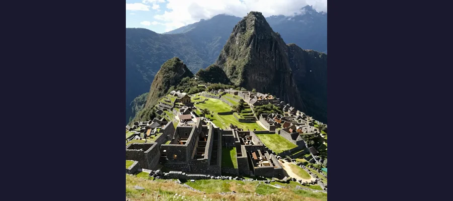
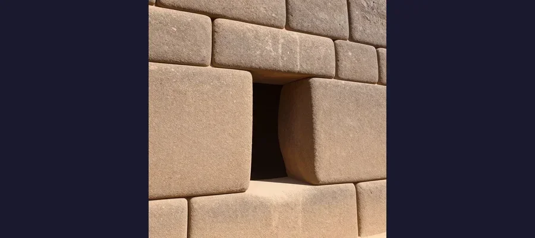

Machu Picchu: The Lost Citadel of the Incas That Was Never Really Lost

In 1911, Hiram Bingham III stumbled upon Machu Picchu, a 500-year-old Inca citadel perched at 8,000 feet in the Andes. But the local farmers already knew it was there. Why was it built, and why was it abandoned?
On the morning of July 24, 1911, a 35-year-old Yale lecturer named Hiram Bingham III scrambled up a steep, muddy slope in the Peruvian Andes, guided by a local farmer who had promised him some ruins on the ridge above. Bingham was not looking for a lost city. He was searching for Vitcos, the last capital of the Neo-Inca resistance, when a melon farmer named Melchor Arteaga told him about some old stone walls on a nearby peak. What Bingham found when he crested the ridge would change his life and reshape the world’s understanding of the Inca Empire: an entire city of granite blocks, astonishingly preserved, draped across a narrow saddle between two peaks at 2,430 meters (7,970 feet) above sea level, with the Urubamba River thundering through the gorge 600 meters below.
Bingham would later claim he had “discovered” Machu Picchu. In truth, the site was never truly lost. Local Quechua-speaking farmers had been living among the ruins for generations, growing crops on the ancient terraces and grazing livestock in the stone plazas. Several explorers had visited the site before Bingham, and maps from the late 19th century marked its location. What Bingham did was bring Machu Picchu to the attention of the world, orchestrating a massive National Geographic-sponsored expedition in 1912 that excavated thousands of artifacts and photographically documented the site for an astonished global audience.
More than a century later, Machu Picchu draws over 1.5 million visitors per year and is recognized as one of the New Seven Wonders of the World. Yet for all its fame, fundamental questions about the citadel remain unanswered. Why was it built on a nearly inaccessible mountain ridge? What was its true purpose? And why was it abandoned barely a century after construction, left to be swallowed by cloud forest while the Spanish conquistadors destroyed every other major Inca city?
The Emperor Who Built a Palace in the Clouds
Machu Picchu was built around 1450 CE during the reign of Pachacuti Inca Yupanqui (r. 1438–1471), the ninth Sapa Inca and the ruler most responsible for transforming the Inca state from a regional kingdom into the largest empire in pre-Columbian America. The name Pachacuti means “Earth-Shaker” in Quechua, and his reign lived up to the title. He conquered vast territories, reorganized the imperial administration, and commissioned some of the most ambitious building projects in Andean history, including the reconstruction of Cusco and the construction of the fortress of Sacsayhuamán.
Most archaeologists believe Machu Picchu was built as a royal estate — a country palace where the emperor and his court could retreat from the capital for religious ceremonies, astronomical observations, and seasonal recreation. The site’s remote location, dramatic setting, and elaborate religious architecture all support this interpretation. But the estate theory does not explain everything. Machu Picchu contains features more consistent with a sacred sanctuary or an astronomical observatory than a simple pleasure palace, and some researchers have proposed that it served multiple functions simultaneously.
- 🏔️ Machu Picchu sits at 2,430 meters (7,970 feet) above sea level on a narrow ridge between the peaks of Machu Picchu and Huayna Picchu
- 📍 The site is located approximately 80 kilometers (50 miles) northwest of Cusco, the Inca capital
- 🏗️ Construction is dated to approximately 1450 CE, during the reign of Emperor Pachacuti
- 🧱 The citadel contains approximately 200 structures arranged on broad parallel terraces around a vast central square
- 👨🌾 An estimated 750–1,000 people lived at Machu Picchu during its peak, mostly support staff and religious specialists
📜 The Name Nobody Can Agree On
The original Inca name for the site is unknown. “Machu Picchu” is simply the Quechua name of the mountain on which the ruins sit, meaning “Old Peak.” The neighboring peak is Huayna Picchu (“Young Peak”). When Hiram Bingham learned the name from his local guides, he applied it to the entire site. Some scholars have suggested the original name may have been Picchu or Patallaqta (“Town on the Hillside”), based on colonial-era documents, but no definitive evidence has been found.

Machu Picchu contains approximately 200 structures on terraces at 2,430 meters above sea level
Stones That Defy Earthquakes: The Engineering Genius of the Incas
The most immediately striking feature of Machu Picchu is its stonework. The Inca were master builders who developed a technique called ashlar masonry — cutting granite blocks so precisely that they fit together without mortar, with joints so tight that a knife blade cannot be inserted between them. The finest examples are found in the Sacred District, where the Temple of the Sun, the Room of the Three Windows, and the Intihuatana stone are located. These walls are constructed from massive blocks, some weighing over 50 tons, fitted with a precision that modern engineers would struggle to replicate with power tools.
The engineering challenge was immense. Machu Picchu sits on a steep mountainside in one of the most seismically active regions on Earth. The Andes are constantly shifting, and earthquakes are frequent. The Inca solution was ingenious: the walls are slightly trapezoidal — they lean inward, with doors and windows also trapezoidal in shape. This design distributes weight toward the center of each structure, making the walls inherently stable. During an earthquake, the dry-stone blocks can shift slightly and then resettle without collapsing, a flexibility that mortared walls lack. This is why Machu Picchu has survived 500 years of Andean earthquakes while colonial-era Spanish churches in Cusco have repeatedly crumbled.
Carving a Mountain: The Terraces and Water System
Before a single building could be constructed, the Inca had to create a stable foundation on the mountainside. They accomplished this by building an elaborate system of agricultural terraces — over 700 of them — that served double duty as both farmland and structural engineering. Each terrace consists of a retaining wall of stone, a layer of gravel for drainage, a layer of sandy soil, and a top layer of rich agricultural earth transported from the Sacred Valley below. The terraces prevent erosion, manage water runoff, and literally hold the mountain together. Without them, Machu Picchu would have slid into the gorge centuries ago.
The water management system is equally impressive. A natural spring on the north side of the site was channeled through a series of 16 carved stone fountains descending along a granite staircase, each feeding into the next via precisely carved spouts. The water flowed continuously, providing fresh drinking water to the entire settlement. The Inca also built an extensive underground drainage system of crushed rock channels beneath the terraces and plazas, preventing the waterlogging that would have destabilized the mountain during heavy rains. Modern engineers who studied the system in the 1990s estimated it was 60% more effective than the drainage systems used in modern Peruvian cities.
🔧 A Secret City Hidden Inside the Mountain
In 2016, engineers using ground-penetrating radar discovered that Machu Picchu is built on top of deeply buried ancient stone walls and tunnels that predate the visible ruins. The radar revealed a network of underground chambers, passageways, and structures buried beneath the terraces — suggesting that the site the Inca built on was itself an older, previously unknown settlement. The finding raised the possibility that Machu Picchu was sacred long before Pachacuti ordered his citadel constructed, adding yet another layer to the site’s mystery.

Inca ashlar masonry: blocks fitted so precisely that no mortar was needed and no knife blade can fit between joints
The Intihuatana: Hitching Post of the Sun
At the highest point of the Sacred District stands one of Machu Picchu’s most enigmatic features: the Intihuatana stone, a carefully carved granite pillar rising from a bedrock platform. The name translates roughly to “Hitching Post of the Sun” in Quechua, a term coined by modern archaeologists to describe its apparent function. The stone pillar is precisely oriented so that at noon on the equinoxes, the sun sits almost directly above it, casting no shadow. At the winter solstice (June 21 in the Southern Hemisphere), the pillar casts its longest shadow toward the sunrise direction.
The Intihuatana was almost certainly used as an astronomical instrument and ritual calendar, allowing Inca priests to track the movements of the sun throughout the year and determine the precise timing of agricultural ceremonies, religious festivals, and planting cycles. The Inca regarded the sun as the supreme deity — Inti, the ancestor of the imperial family — and the ability to predict its movements was both a scientific achievement and a source of political power.
The Intihuatana at Machu Picchu is one of the few that survived the Spanish conquest intact. The Spanish systematically destroyed most Intihuatana stones throughout the empire as part of their campaign to suppress indigenous religion. Machu Picchu’s remoteness — the very reason it was forgotten — saved its sacred stone from the iconoclasm that obliterated so much of Inca culture.
Why Did the Incas Abandon Their Citadel?
The most haunting question about Machu Picchu is also the simplest: why was it abandoned? The citadel was occupied for less than a century. Construction began around 1450, and by roughly 1572 — a generation after the Spanish arrived in Peru in 1532 — the site was empty.
The critical fact is that the Spanish never reached Machu Picchu. They conquered Cusco, sacked the temples, melted down the gold, and imposed their religion by force. They destroyed the Inca road network, executed the last Inca ruler, and systematically dismantled every major Inca city they could find. But they did not find Machu Picchu. The site was too remote, too high, and too far from the main roads to attract Spanish attention. The conquistadors heard rumors of a “lost city” in the mountains but never located it.
So if Machu Picchu was not destroyed by invasion, why was it abandoned? The most likely answer is disease. The epidemics of smallpox, measles, and other European diseases that killed an estimated 50–90% of the indigenous population after 1532 would have devastated Machu Picchu just as thoroughly as they devastated the cities the Spanish actually reached. Without a sufficient labor force to maintain the terraces, water systems, and buildings, the remaining inhabitants likely migrated to more defensible positions or returned to the Sacred Valley. By the time the Spanish consolidated control of the region, Machu Picchu was already a ghost town, slowly being consumed by the cloud forest.
🏵️ The Jungle Reclaims Its Own
When Hiram Bingham arrived in 1911, much of Machu Picchu was buried under dense tropical vegetation. Trees grew from the tops of stone walls, roots had pried apart masonry joints, and thick vines covered entire buildings. Bingham’s team spent months clearing the site with the help of local workers, cutting away centuries of jungle growth to reveal the citadel beneath. The process of reclamation by nature had been so thorough that some early visitors doubted the ruins were real — they suspected Bingham had assembled the stones himself.
The Mystery of the Missing Treasures
When Bingham excavated Machu Picchu between 1912 and 1915, he found something puzzling: almost no gold. The Inca were famous for their wealth in precious metals. Spanish chronicles describe temples sheathed in gold sheets, gardens with golden cornstalks and silver llamas, and entire rooms filled with treasure. Yet at Machu Picchu, Bingham’s team recovered only small ornaments, a few ceremonial vessels, and minor personal items.
Where did the treasure go? Several explanations have been proposed. The Inca may have systematically removed the valuables before abandoning the site, transporting gold and silver to more secure locations during the chaotic final years of the empire. Some artifacts may have been looted by local residents in the centuries between abandonment and rediscovery. And some scholars have suggested that Machu Picchu, as a royal estate rather than a major temple complex, simply may not have contained the vast quantities of gold the Spanish found in Cusco.
What Bingham did find was voluminous: over 40,000 artifacts, including pottery, tools, bronze implements, human skeletal remains, and textiles. He shipped most of these to Yale University, sparking a century-long dispute between Peru and Yale that was not resolved until 2012, when Yale agreed to return the artifacts. The case became a landmark in the global debate over cultural patrimony and the ethics of archaeological extraction.
- 🏛️ Hiram Bingham’s excavations (1912–1915) recovered over 40,000 artifacts, most of which were shipped to Yale University
- 💰 Despite its wealth as an Inca royal site, almost no gold was found — suggesting valuables were removed before abandonment
- 🏔️ The Inca built over 40,000 kilometers (25,000 miles) of roads known as the Qhapaq Ñan, connecting their empire from Colombia to Chile
- 🚶 The famous Inca Trail to Machu Picchu is a small section of this vast road network, taking 4 days to hike from the Sacred Valley
- ♿️ In 1997, a crane filming a beer commercial fell and chipped the Intihuatana stone, causing international outrage and stricter preservation rules
A City Built to Endure — But For How Long?
Machu Picchu's survival is partly geological and partly accidental. The ashlar masonry and trapezoidal architecture proved earthquake-resistant. The agricultural terraces prevented the mountain from collapsing. And the Spanish never found the site, so they could not demolish it as they did Cusco's Inca temples. But the greatest threat to Machu Picchu today is not nature or conquest — it is the people who love it.
Before the COVID-19 pandemic, Machu Picchu was receiving over 1.5 million visitors per year, far exceeding the capacity the Peruvian government's own experts recommended. The sheer volume of foot traffic eroded stone pathways, weakened retaining walls, and stressed the site's fragile infrastructure. The surrounding town of Aguas Calientes (also called Machu Picchu Pueblo) expanded rapidly to service tourism, with hotels, restaurants, and a railway line that collectively strained the local ecosystem. In response, the Peruvian government introduced strict ticketing systems, time-limited visits, and assigned walking routes, but enforcement has been inconsistent.
The parallels to other endangered ancient sites are striking. Just as the Pyramids of Giza face pressure from urban encroachment and mass tourism, and the Terracotta Army lost its original pigments to premature excavation, Machu Picchu stands at a crossroads between accessibility and preservation. UNESCO has repeatedly threatened to place the site on its World Heritage in Danger list if conservation measures are not improved.
☀️ The Sun Temple That Outlasted an Empire
Machu Picchu was built by an emperor who believed he was the son of the sun, designed to honor the deity who gave his family the right to rule. The empire he built lasted less than a century before Spanish steel and European disease tore it apart. But the citadel on the mountain — the one place the Spanish never reached — survived. It survived earthquakes that leveled colonial cities. It survived 400 years of jungle growth that swallowed it whole. It survived the arrival of a Yale lecturer who claimed to have discovered something that was never truly lost. Machu Picchu endures because the Inca built it to endure: stones fitted so precisely that no mortar was needed, walls that flex rather than break, terraces that hold a mountain together. The question now is whether it can survive us — the millions who trek to its gates each year, cameras in hand, searching for the same sense of awe that Bingham felt on a muddy morning in 1911. The Incas built their citadel to last forever. It is our responsibility to make sure that it does.
Frequently Asked Questions
Who really discovered Machu Picchu?
Machu Picchu was never truly “lost.” Local Quechua-speaking farmers lived among the ruins for generations before Hiram Bingham III visited the site on July 24, 1911. Several other explorers, including the German businessman Augusto Berns in the 1860s, may have visited the site earlier. Bingham did not “discover” Machu Picchu in the literal sense, but he was the first to bring it to global attention through his National Geographic-sponsored expeditions and publications.
How did the Incas build Machu Picchu without mortar or wheels?
The Inca used ashlar masonry — a technique of cutting stones so precisely that they fit together without mortar. Stones were shaped using harder stones as hammer tools, with abrasives like sand and water to grind surfaces smooth. The Inca did use the concept of rollers and levers to move massive blocks, though they did not have wheeled vehicles. Ramps, earthen embankments, and thousands of laborers were employed to drag stones into position.
Why did the Spanish never find Machu Picchu?
Machu Picchu's remote location — perched on a narrow ridge high above the Urubamba River gorge, accessible only by narrow mountain trails — kept it hidden from the Spanish conquistadors. By the time the Spanish consolidated control of Peru, Machu Picchu had already been abandoned, likely due to epidemics of European diseases that devastated the indigenous population. The site was overgrown with vegetation and far from any main road, giving the Spanish no reason to search for it.
Can you still hike the Inca Trail to Machu Picchu?
Yes, the classic 4-day Inca Trail is one of the world's most famous treks, covering roughly 43 kilometers (26 miles) through Andean highlands and cloud forest before arriving at Machu Picchu through the Sun Gate. However, the Peruvian government strictly limits access to 500 people per day (including guides and porters), and permits often sell out months in advance. The trail is a small section of the Qhapaq Ñan, the vast 40,000-kilometer road network that connected the Inca Empire.
ð Recommended Reading
Want to learn more? Check out The Last Days of the Incas by Kim MacQuarrie on Amazon for a gripping narrative of the Spanish conquest and the fall of the Inca Empire, including the story of Machu Picchu and the last Inca resistance. (As an Amazon Associate, we earn from qualifying purchases.)
References & Further Reading
- Wikipedia: Machu Picchu — Comprehensive overview of history, construction, and archaeological research
- Britannica: Machu Picchu — History, description, and significance of the Inca citadel
- World History Encyclopedia: Machu Picchu — Detailed analysis by Mark Cartwright
- History.com: Machu Picchu — Peru, Elevation & Facts
- History.com: This Day in History — Machu Picchu Discovered (July 24, 1911)
- History.com: The Engineering Secret Behind Machu Picchu’s Stonework
- Wikipedia: Hiram Bingham III — Biography of the explorer who brought Machu Picchu to world attention
Editorial note: reconstructions are continuously revised as imaging and inscription studies improve. See our Editorial Policy.